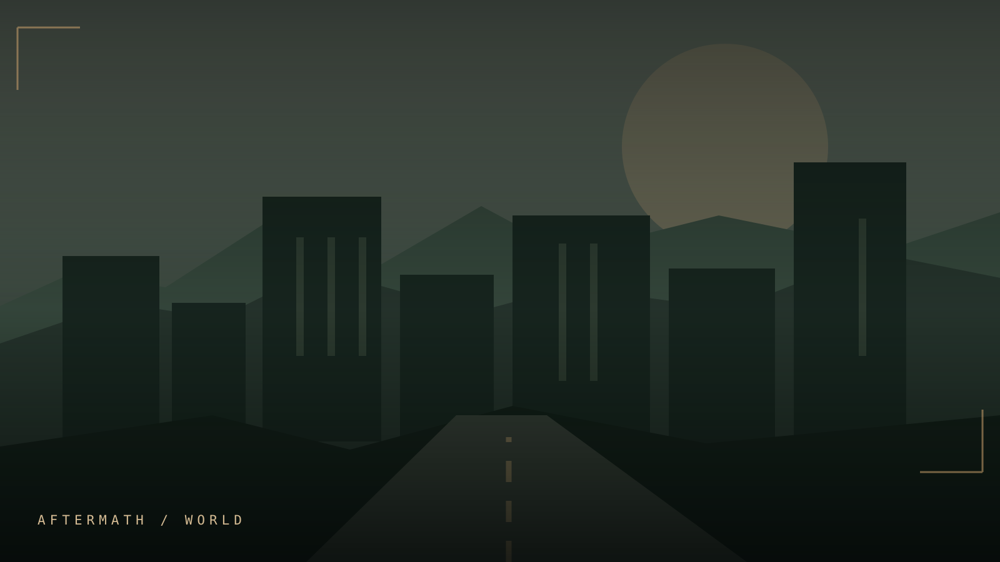
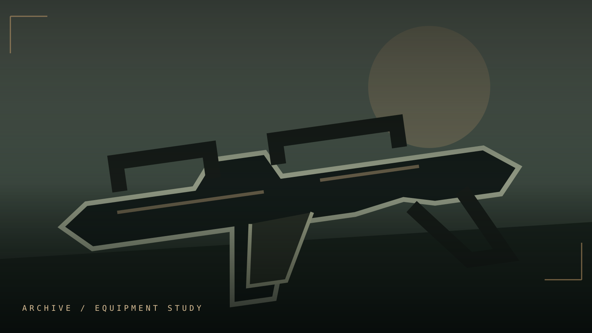
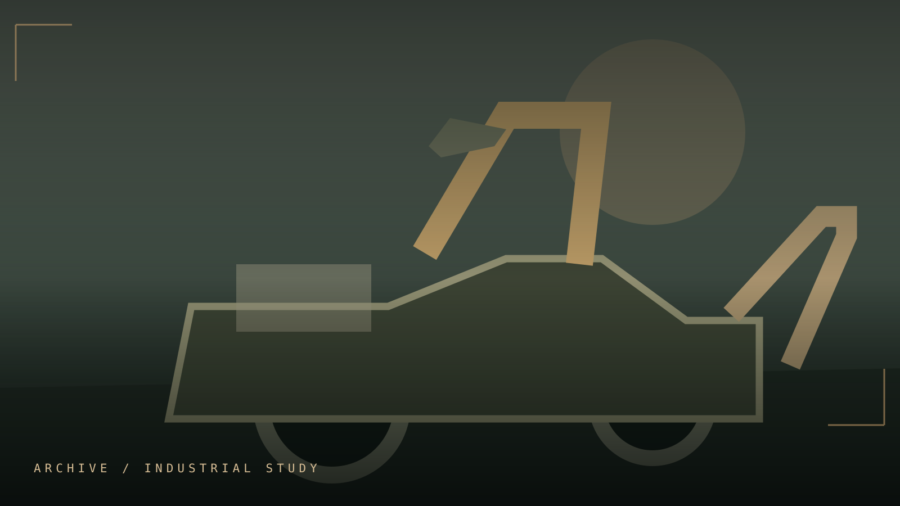

Civilization
Urban remnants, apartments, intersections and signs of the people who lived there.
SURVIVE · SEARCH · UNCOVER · REBUILD
Out there, nothing comes easy. Every abandoned road leads somewhere. Every decision leaves something behind.
TLA: EXFIL imagines survival beyond the moment everything changes. Beneath empty highways, broken rooftops and forgotten work sites, the world carries on — indifferent to who makes it through.
Concept presentation. Environment and equipment visuals are illustrative, not captured gameplay or a promise of finished features.

ARCHIVE 01 / ALAMO FALLS / CONCEPTThe five original chapters return with a more cinematic identity. This is a spoiler-safe look at the project's evolving vision.
A fictional Central Texas-inspired region, reclaimed one road at a time.
↗ 02 / EQUIPMENTTools of survival. Equipment concepts shaped by practical necessity.
↗ 03 / MACHINERYTransport, recovery and the machines a fallen world leaves behind.
↗ 04 / ATMOSPHEREStatic, silence and the distant evidence of life.
↗ 05 / DEVELOPMENTHow the project is progressing, without false deadlines or release promises.
↗A fictional region inspired by Central Texas. Familiar details give way to unfamiliar dangers.
Roads give way to neighborhoods. Neighborhoods give way to open land. Beyond that, the landscape becomes something else entirely.
Urban remnants, apartments, intersections and signs of the people who lived there.
Damaged connections between settled spaces, abandoned infrastructure and changing terrain.
Wilderness and dangerous edges where answers belong to the player, not the website.
An equipment direction grounded in hard use, improvisation and the consequences of carrying too much or too little.

Visual direction / Concept

Visual direction / Concept
Visual direction / Concept
THE QUESTION ISN'T WHAT YOU CAN FIND. IT'S WHAT YOU CAN AFFORD TO LOSE.
A world of utility vehicles, abandoned work sites and industrial machinery. Exploratory concepts, not confirmed playable vehicles.
Road vehicles and utility concepts appropriate to a damaged landscape.
Heavy industrial equipment as environmental storytelling.
Mechanical silhouettes that speak to salvage and rebuilding.
Sometimes it's the sounds you hear. Sometimes it's the sounds that stop.
Atmospheric audio direction explores isolated spaces, weather, mechanical noise, distant encounters and music that belongs to the world. No downloadable or licensed music is published here.
Soundscapes that give empty places a sense of life and history.
Audio cues that matter when the next threat cannot be seen.
In-world radio and music exploration, subject to clearance and testing.
A public-facing development overview. Milestones describe intentions, not a statement that a feature has shipped.
Establishing the playable foundation, stability and evidence-driven testing.
Exploration, equipment decisions, encounters and outcomes.
Environmental quality, equipment feel and threat behaviors.
Multiplayer direction subject to implementation and live validation.
Additional content, environments and experiences.
Performance, accessibility, playtesting and release approval.
Everything shown is a public development presentation. Features can change or be removed. No date, alpha access, or public download is currently announced.
Explore the publicly released fragments of the setting. Choose a marker to reveal an approved field dossier. Other records remain sealed until their release classification changes.
An original Central Texas-inspired region shaped by abandoned infrastructure and dangerous routes.
Markers are thematic navigation, not exact game geography. No protected lore or unreleased encounter data is shown.
SELECT A SIGNAL ON THE MAP TO INSPECT ITS RECORD ↗